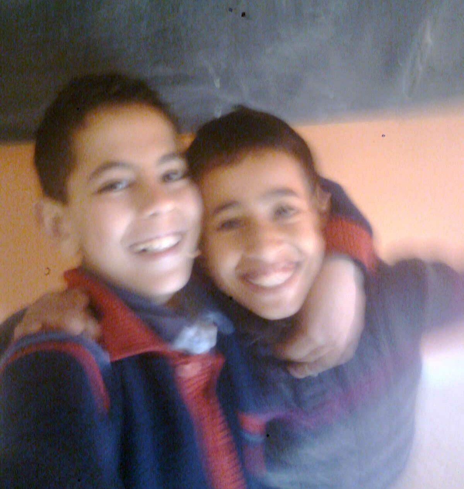

Mehdi Bahlaoui was born on April 13, 2003, in Marrakesh, Morocco.
He grew up in a family that valued education
and hard work, which instilled in
him a
strong sense of curiosity and a
desire to
learn from an early age.
His parents encouraged him to explore various interests, including technology and engineering, which would later shape his career path.
Growing up, and like all children of his age, Mehdi fell in love with a video game and played it nonstop. He knew every
corner of it.
Eventually, he turned that obsession into a YouTube
channel, just to see where it could go.
It grew faster than expected: over 600 loyal followers, 20,000+ views.
But he never saw himself as a gaming
YouTuber long-term, so he quit.
Through it, he learned how to edit, how to
talk to an audience, how to build and
hold attention. Skills that would
later feed into
his music, storytelling, and everything else that followed.

Mehdi and his best friend Kahoua
in primary school